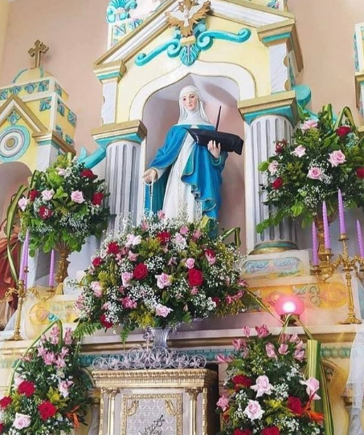
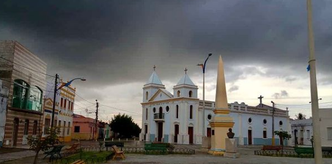
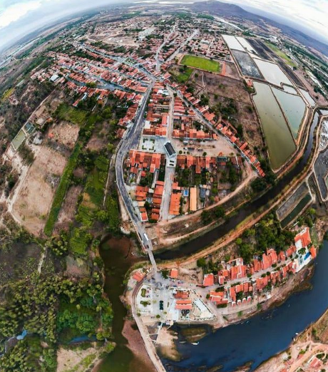

Informações técnicas sobre relevo, população, IDH etc.
| INFORMAÇÕES | |
|---|---|
| Municípios limítrofes | Aracati, Jaguaruana e Palhano |
| Fundação | 15 de setembro de 1956 (64 anos) |
| Área total | 209,490 km² |
| Clima | Temperatura máxima de 36°C e mínima de 26'C (médias) |
| IDH | 0,641 — médio |
| PIB | R$ 27 269,223 mil |
| INFORMAÇÕES TERRITORIAIS | |
|---|---|
| Número de habitantes | 7 827 habitantes |
| Superfície de Itaiçaba |
20 985 hectares
209,85 km² (81,02 sq mi) |
| Densidade populacional | 37,3 ha./km² |
| Altitude de Itaiçaba | 14 metros de altitude |
| Coordenadas geográficas decimais |
Latitude:
-4.67426
Longitude: -37.8223 |
| Coordenadas geográficas sexagesimais | Latitude: 4° 40' 27'' Sul , Longitude: 37° 49' 20'' Oeste |
| INFORMAÇÕES DO MUNICÍPIO | |
|---|---|
| Endereço da Prefeitura Municipal de Itaiçaba |
Itaiçaba
Prefeitura de Itaiçaba
Rua João Correia, 298 ITAIÇABA - CE, 62820-000 Brasil Work +55 88 3410-1112 Fax +55 88 3410-1213 |
| Telefone da prefeitura |
(88) 3410-1112
Internacional: 55 88 3410-1112 |
| Fax |
(88) 3410-1213
Internacional: +55 88 3410-1213 |
| Endereço eletrônico da prefeitura |
frankgomes@bitwave.com.br
|
| Site oficial do município | itaicaba.ce.gov.br |
| INFORMAÇÕES DO ADMINISTRATIVAS | ||
|---|---|---|
| Prefeito de Itaiçaba | FRANK GOMES FREITAS | |
| Partido politico | PDT | |
| INFORMAÇÕES DE TRANSPORTE | |
|---|---|
| Transporte urbano disponível | - |
| Aeroporto |
Aeroporto Dix-Sept Rosado
Aeroporto Internacional Pinto Martins
127.3 km
Aeroporto de Sobral
300.3 km
|
| INFORMAÇÕES DE DISTÂNCIA A OUTRAS CIDADES | ||
|---|---|---|
| São Paulo : 2305 km | Rio de Janeiro : 2110 km | Brasília : 1658 km |
| Salvador : 927 km | Belo Horizonte : 1812 km | Manaus : 2472 km |
| Curitiba : 2614 km | Fortaleza : 133 km mais perto | Goiânia : 1829 km |
| Belém : 1240 km | Porto Alegre : 3154 km | Guarulhos : 2282 km |
| Campinas : 2260 km | São Luís : 759 km | São Gonçalo : 2.472 km |
| Distância calculada em linha reta! | ||
Conheça mais sobre a história de Itaiçaba.
Itaiçaba é um município brasileiro do estado do Ceará. Localiza-se na microrregião do litoral de Aracati, mesorregião do Jaguaribe. Sua população estimada em 2004 era de 7.698 habitantes. Ocupa uma superfície de 240 km².Foi criado em 15 de outubro de 1956 por desanexação de Jaguaruana. Chamou-se inicialmente Feira de Gado, depois passou a se chamar Passagem de Pedras. Tem um rio chamado Jaguaribe que passa por trás da igreja, a padroeira da cidade é Nossa Senhora da Boa Viagem.
Itaiçaba como distrito administrativo pertenceu primeiramente ao município de Aracati. Em 21 de agosto de 1823, o Decreto Lei Nº 169, de 31 de março de 1938, transferiu o distrito para a jurisdição do município de Jaguaruana. Ainda no mesmo ano adotou a denominação atual de Itaiçaba (significa Passagem das Pedras), por força de um Decreto Lei Nº448, de dezembro de 1938. Na luta por sua independência administrativa destaca-se o Deputado Jeová Costa Lima, autor do Projeto que no dia 15 de setembro de 1956, se transformou na Lei Nº 3.338 que deu liberdade administrativa ao município. Itaiçaba foi oficialmente instalada em solenidade no dia 7 de outubro de 1956, tendo como seu primeiro prefeito o Sr. Agostinho Correia Lima.
Por volta da década de 80 a cidade sofria com o problema de inundações, época na qual praticamente todos os habitantes tinham que sair para os distritos de Itaiçaba (Tabuleiro do Luna, Alto Brito, Cidade Nova) que ficavam na parte alta do município.
Na entrada da cidade encontra-se a serra do Ererê, onde existe uma lenda que durante uma grande seca, quando alguns retirantes passavam por lá, uma donzela já estava muito fraca e não conseguiu seguir viagem com os outros, ficando ao pé da serra. Dizem que ela se encantou, outros dizem que ela morreu, a verdade quem saberá o que acontece é uma devoção que as pessoas têm pela donzelinha, ergueram até um pequeno altar, no lugar onde supostamente ela teria morrido.
Saiba mais sobre os melhores lugares e o que fazer em Itaiçaba.
Meios de comunicação social: Cobertura por três emissoras de rádio AM e outra FM de Aracati e uma de AM de Russas. Patrimônio histórico: não possui bens tombados. Padroeira: Nossa Senhora da Boa Viagem Equipamentos culturais: uma biblioteca e o CVT(Centro Vocacional Tecnológico)


Veja como chegar nos melhores pontos de Itaiçaba.